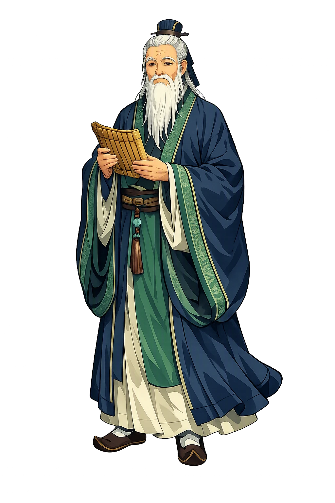
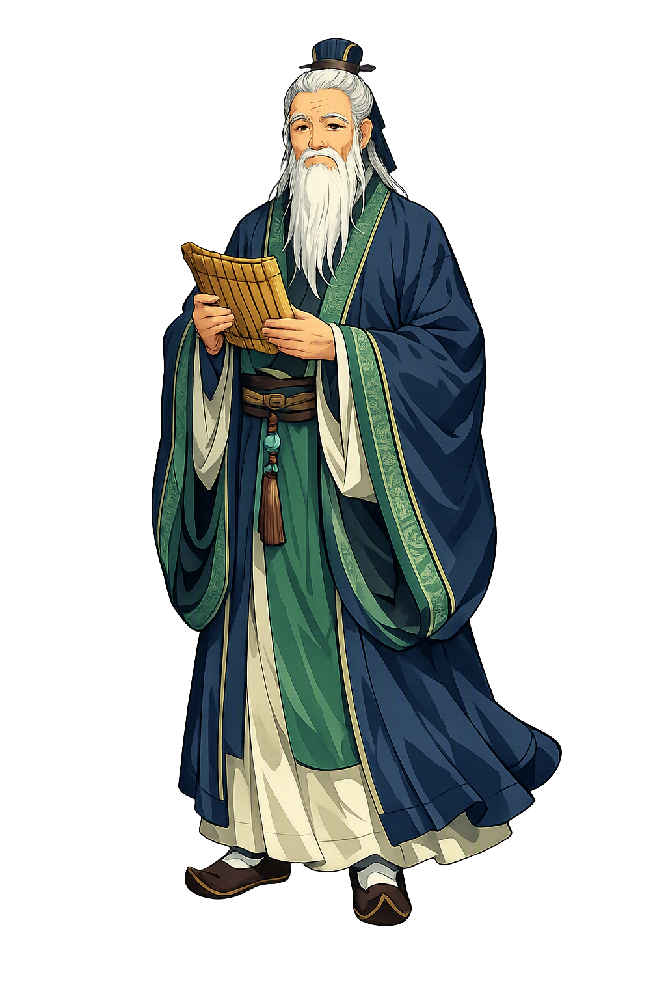

Stories of Kǒngzǐ
Kǒngzǐ is a historical man — born 551 BCE in the state of Lǔ — but the tradition did with his biography what it does with all founders: it polished it into legend. The Shǐjì of Sīmǎ Qiān (ch. 47) supplies the framework, the Lúnyǔ the voice; between them stands the mythic Master, born under a portent, refused by every court, and vindicated only after death.
The legends of the Master’s birth are later embroidery on a plain record — Sīmǎ Qiān’s Shiji 47 says only that Kǒng Qiū was born in 551 BCE at Zōu in Lǔ, posthumous son of the aged soldier Kǒng Shūliáng Hé and the young Yán Zhēngzài. But tradition could not leave a founder without a portent: a qilin, the unicorn-beast that appears only when a sage is to come, was said to have entered the family courtyard and spat a jade tablet announcing a son whose doctrine would rule all under Heaven, though he would sit on no throne. The tablet bore the character for “hill” (qiū), and the child received it as his personal name — matching Mount Ni, beside which he was born — and the courtesy name Zhòngní, “second-born Ni.” Han thinkers gave the idea its name: the Master was the sùwáng, the “uncrowned king,” whose kingdom was the text. The legend means the tradition knew exactly what it had.
In his thirties the young Kǒngzǐ travelled west to the royal capital of Zhōu to question the aged archivist Lǎozǐ about the rites of burial and mourning. Lǎozǐ, tradition says, received him coolly: “The men of whom you speak are bones now, and their words died with them… I have heard that a good merchant hides his store as though it were empty, and that a noble man in his bearing looks like a fool. Cast off your pride and your many desires — for neither profits you. That is all I have to say to you.” The Master returned and told his disciples: “I know how birds fly, how fish swim, how beasts run — but the dragon I cannot fathom, riding the wind and clouds up into Heaven. Today I have seen Lǎozǐ: he is such a dragon.” (Shiji 63.) The meeting is the tradition’s way of contrasting its two great teachers — the one who withdrew, and the one who knocked on every door.
From 497 to 484 BCE the Master wandered — Wèi, Chén, Cài, Chǔ — offering his Way to rulers who would not buy it. The Analects keeps the human record. At the border pass of Yì, the warden, watching a whole generation of pupils following one unheeded man, sought him out: “Heaven is going to use the Master as a wooden bell” — the clapper that warns a sleeping age (3.24). In Chǔ the madman Jiēyú passed his carriage singing: “Phoenix, phoenix, how your virtue has declined!… The past is beyond mending, but the future can still be pursued. Give it up, give it up — those who serve in court now court death” (18.5). The Master climbed down wanting to speak with him, but Jiēyú fled. Between Chén and Cài the party was cornered and out of food; the Shiji adds the scene the disciples themselves laughed at — cornered and helpless, the Master said they were “like stray dogs,” and smiled: “Yes, yes — stray dogs indeed.” The road means what he told the recluses: “If the Way prevailed in the world, I would not need to change anything” (18.6). And still he walked.
At sixty-eight the Master was called home to Lǔ, and his last five years were his real victory — not in office but in editing: he arranged the Odes and the Documents, said the tradition, and wrote the Spring and Autumn Annals so that “rebellious ministers and villainous sons would be struck with terror.” “I transmit but do not create,” he said; “I trust and love antiquity” (Analects 7.1). The book keeps the cost. When his best pupil, Yán Huí, died young, the Master wept without restraint: “Heaven has bereft me! Heaven has bereft me!” (11.9). In 479 BCE he died; the Shiji has him dream of a sacrificial tripod by his door and sing, days before: “The great mountain must crumble, the stout beam must break, the wise man must wither away.” The lament means the tradition understood: a teacher’s immortality is entirely in the students — and Yán Huí’s death is the wound the Analects never closes.
Confucius, Moral Teaching, Ritual
Kǒngzǐ — Master Kong, Latinized by Jesuits as Confucius — is the teacher of China: the man who made learning, ritual propriety (lǐ 禮), and humaneness (rén 仁) the foundation of the good life and the good state. He claimed no revelation and no divinity — only transmission of the ancients — and became, for two and a half millennia, the archetype of the teacher.
The core of his ethics: the fellow-feeling that makes one truly human; “loving others” is its shortest definition (Analects 12.22).
The rites that choreograph every relationship, from ancestral sacrifice to the cup offered a guest: reverence made visible.
He spoke rarely of spirits but constantly of Heaven’s mandate (tiānmìng) as the moral horizon of conduct (Analects 3.13).
The Lúnyǔ 論語, “selected sayings,” compiled by disciples after his death — the core text of East Asian education for two thousand years.
From the original script to the living URL
孔子
The name in its original Chinese form. Kǒngzǐ (孔子) is attested in the source tradition — “Master Kong”. Its original diacritics and script distinctions carry the full phonetic and orthographic weight of the source tradition.
kongzi
Reduced to plain kongzi, the name loses everything that made it specific: original diacritics and script distinctions. What remains is an ASCII string that machines can parse but that no longer speaks with its original voice.
Kǒngzǐ
The Unicode restoration recovers what ASCII flattened. Kǒngzǐ restores original diacritics and script distinctions, returning the name to its original written dignity. The domain encodes to Punycode, but the browser displays the truth.
Kǒngzǐ.com → xn--kngz-enbi.com
The non-ASCII characters in Kǒngzǐ are encoded while the ASCII remains visible. To the DNS, it is Punycode. To humanity, it is Kǒngzǐ.
Owned, ideal, and ASCII forms of Kǒngzǐ
Kǒngzǐ
Restores 孔子. The live temple domain — kǒngzǐ.com.
kongzi
Flattens 孔子. The plain ASCII fallback — what DNS and legacy systems see.
How Kǒngzǐ was spoken
How Kǒngzǐ is preserved in writing
A bespoke provenance study for Kǒngzǐ is being prepared by the PUNICODEX scholarly team.
Contribute scholarly provenance →Kǒngzǐ is the rare founder who disclaimed founding anything. “I transmit, I do not create.” What he transmitted was a question rather than an answer: how should a human being live among other human beings? His answers were deliberately unheroic — learn, practice the rites, keep your word, honor your parents, govern by example — and the unheroism is their strength. He is the teacher as such, the man whose greatness is measured entirely in students.
Enter Extended Lore